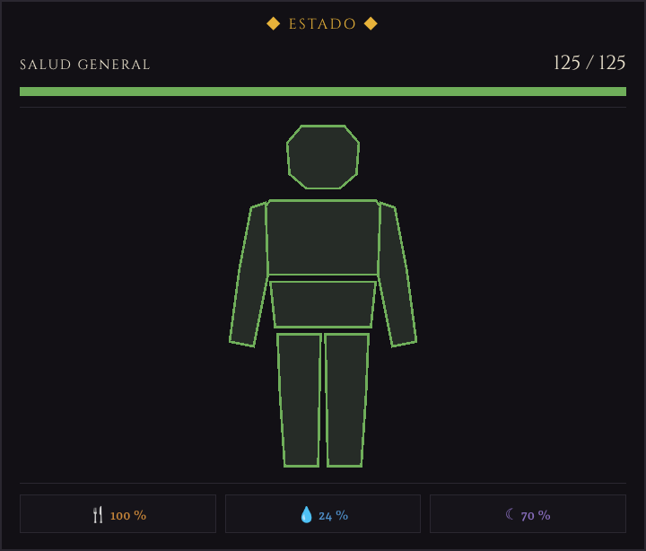
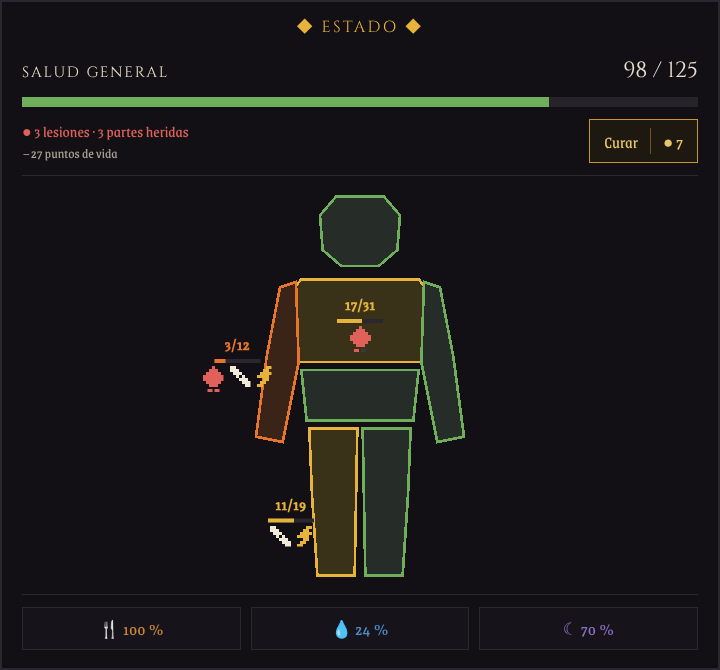
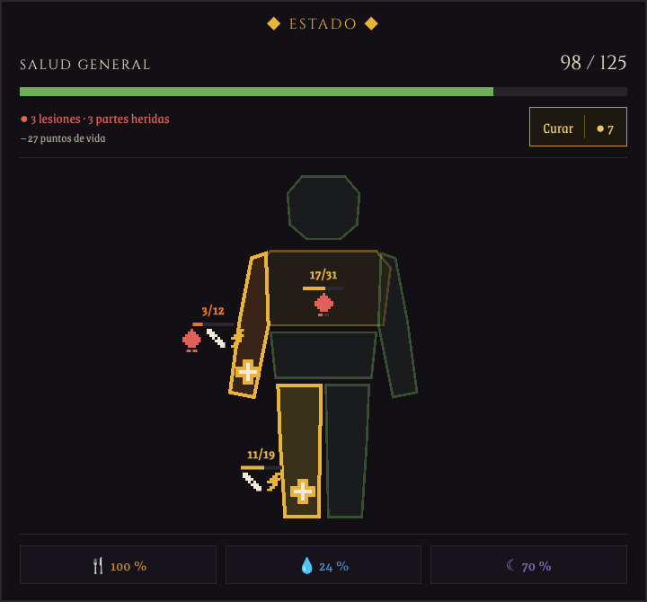
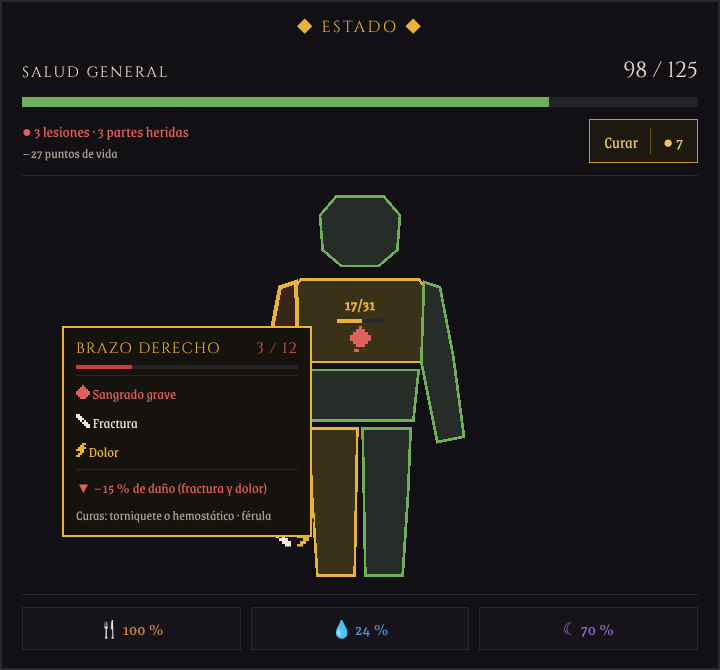
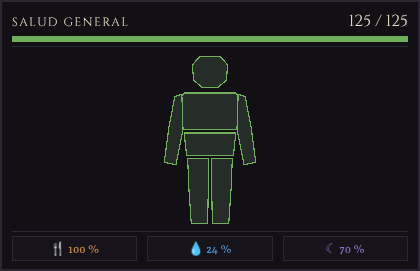
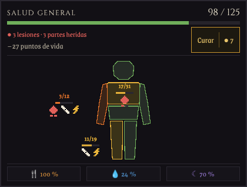
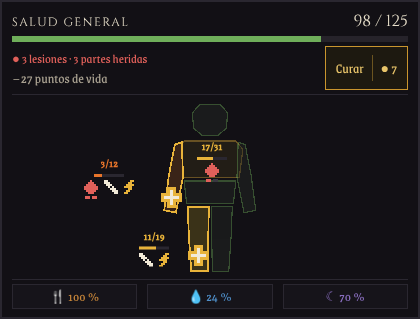
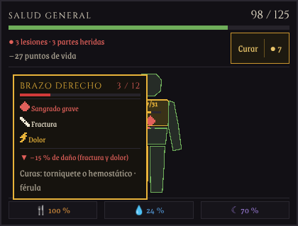

Partes sanas en verde y sin números. Partes heridas: color según su vida, valor, barrita e iconos de lesión (gota con 1 o 2 marcas = sangrado leve o grave; hueso = fractura; rayo = dolor). Una cura elegida pone una cruz solo en las partes donde sirve. Tocar o pasar el ratón por una parte abre su detalle. Mockup interactivo: mock.html?caso=sano|herido|cura|detalle&disp=escritorio|movil.







